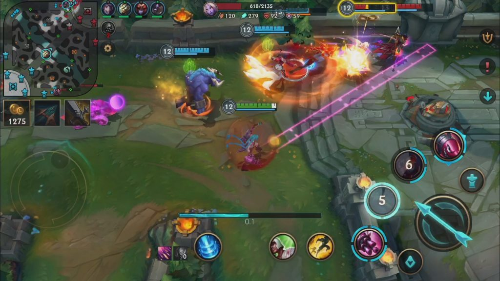
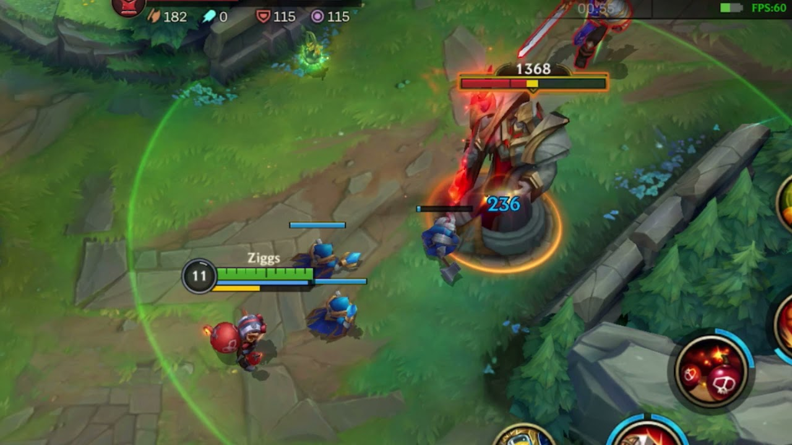
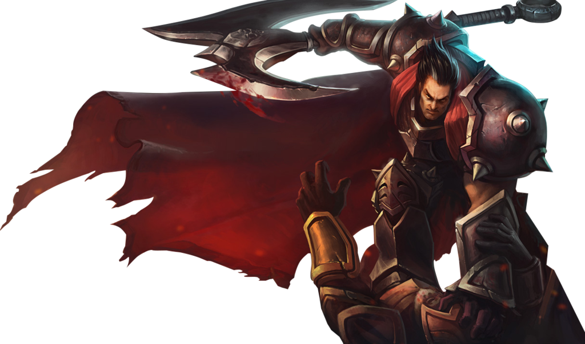
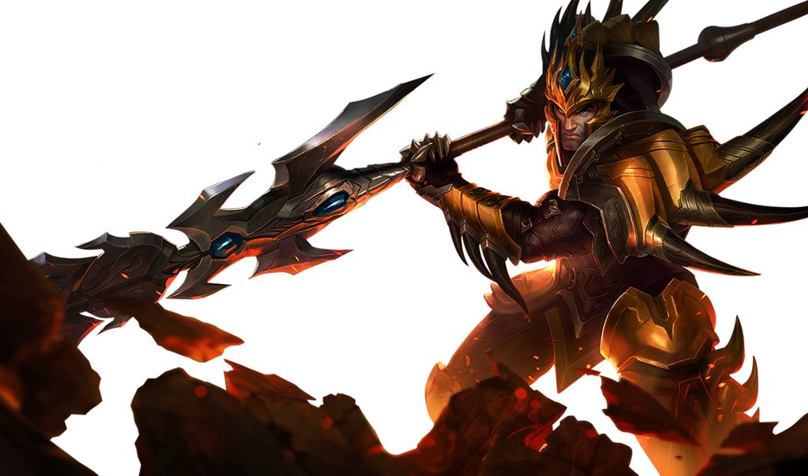
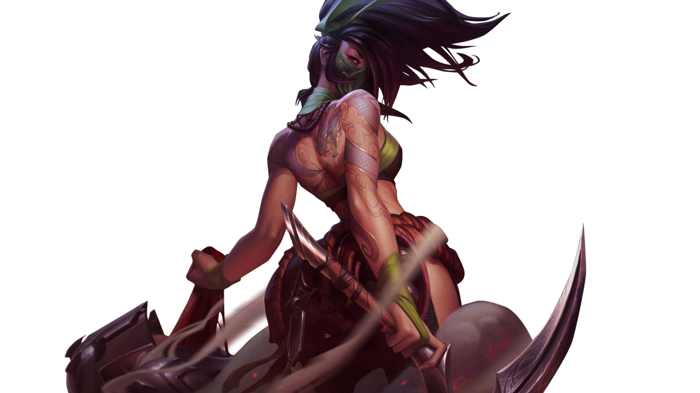
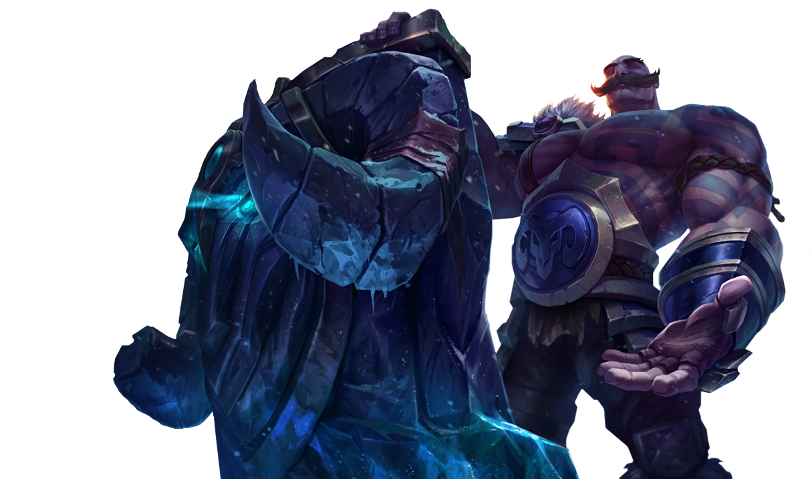
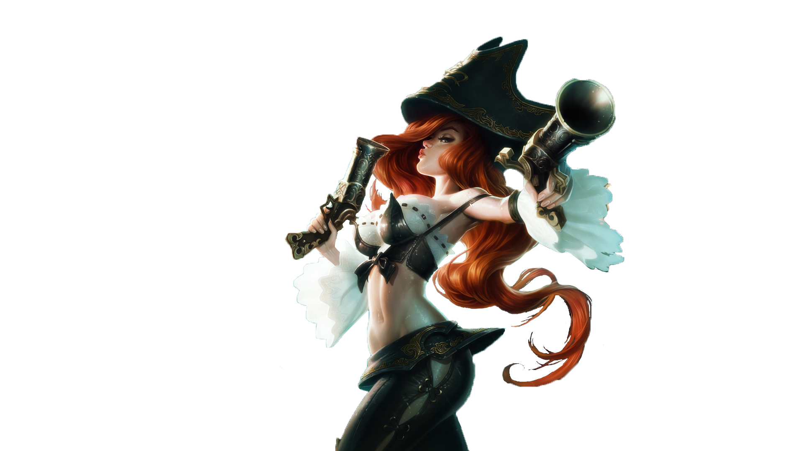
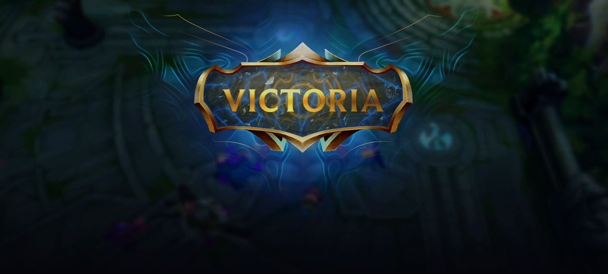

Quienes jugaron League of Legends en PC durante años tuvieron que emprender la laboriosa tarea de acostumbrarse a una versión diferente y hasta extraña del título. En contraposición, otras tantas personas llegaron a vivir la experiencia del juego de Riot Games por primera vez en sus vidas, probablemente producto de la migración de otros títulos similares para celular como Mobile Legends. Si haces parte de cualquiera de esos dos grupos de personas, te explicaremos a continuación todo lo que necesitas saber para iniciar cómodamente a Wild Rift.
Guia Wild Rift
¿Cómo instalar Wild Rift?
Lo primero que explicará esta guía de Wild Rift es cómo instalar el juego. Esto lo puedes hacer desde Google Play Store (en caso de Android) o desde la App Store (en caso de iOS). Solo búscalo en la tienda e instálalo. Debes ser paciente, porque pesa 3GB. Después de eso, el juego te pedirá acceder por medio una cuenta de Riot Games, Google o Facebook. Si no tienes una cuenta de Riot Games, puedes elegir la primera opción y después oprimir en 'Crear cuenta'. Hecho esto, se te pedirán algunos datos como el correo electrónico para continuar. Si tienes datos de cualquiera de las tres opciones solo ingrésalos y se te permitirá jugar.
Primeros pasos en Wild Rift
Riot Games se empeñó en que League of Legends para celulares fuera una experiencia más sencilla para los primerizos en el juego. Debido a eso, creó un total de nueve tutoriales diseñados para enseñar los conceptos básicos de Wild Rift. La primera vez que entras al juego este te obligará a terminar el tutorial básico. Sin embargo, después de esto serás tú el que deberá buscar los demás escenarios. Esto es sencillo, pues desde el menú principal solo deberás oprimir en 'Jugar', después ir a la pestaña de 'Entrenamiento' y entrar a la sección de tutoriales. Terminarlos todos valdrá la pena, pues recibirás recompensas y el conocimiento básico para jugar.

¿Cuál es el objetivo de las partidas?
Al igual que en cualquier título de este género, en cada partida habrá dos equipos rivales de cinco jugadores cada uno. Los dos equipos deberán defender una base propia mientras tratan de destruir la base del equipo enemigo. El objetivo principal es una estructura central llamada el Nexo; si cualquiera de los dos Nexos es destruido, la partida llegará a su fin y se le dará la victoria al equipo que lo haya derrumbado. Para lograr esto en Wild Rift, cada jugador deberá elegir un campeón que usará por toda la partida. Un campeón es un personaje con unas habilidades únicas y que puede recolectar experiencia y oro para hacerse más fuerte. Esto se logra derrotando criaturas enemigas débiles conocidas como súbditos. La idea de esto es que sea capaz de derrotar a los campeones enemigos para que dejen desprotegida su base y así poder destruirla. Las bases están conectadas por tres caminos conocidos como carriles. Aquí hay estructuras defensivas que hay que destruir antes de llegar al Nexo. Los jugadores deben cubrir todos estos carriles y luchar contra los campeones enemigos mientras tratan de fortalecerse.

¿Cómo funcionan las torres?
Las torres son estructuras defensivas que se encuentran a lo largo de los carriles. Estas impiden que los súbditos y los campeones enemigos lleguen a hacerle daño al Nexo. Por lo tanto, es fundamental destruirlas (al menos todas las de un carril) para acabar eventualmente el juego. Las torres disparan a todos los objetivos enemigos que se encuentren a su alcance. Estas golpean muy fuerte y ni siquiera un campeón es capaz de sobrevivir varios tiros seguidos, al menos al inicio de la partida. Lo importante es no caminar hacia la zona de ataque de una torre enemiga sin necesidad de hacerlo. Para que un campeón pueda hacerle daño a una torre enemiga y destruirla, debe matar a los súbditos enemigos y hacer que sus súbditos avancen y se estrellen contra la torre. De esta forma, la torre disparará a los súbditos, lo que permite que el campeón pueda entrar a su zona sin ningún problema. La torre no disparará al campeón hasta que mueran todos los súbditos o hasta que el personaje golpee a un campeón aliado dentro de esta zona. Si haces esto, la torre te atacará inmediatamente.
¿Qué campeón debo escoger en Wild Rift?

Carril solitario (TOP)
A esta línea se llevan campeones luchadores cuerpo a cuerpo, asesinos, o tanques (con mucha resistencia). Es muy importante ganar ventaja en linea, estar atento a los gankeos tanto del jungla aliado como del enemigo, asi como rotar al momento de hacer objetivos. Para comenzar es una buena idea elegir a Garen, Darius o Malphite.

Jungla
Esta posición es para campeones que pueden pelear contra los monstruos neutrales que se encuentran en la jungla y caminan por todo el mapa buscando una oportunidad para aparecer de sorpresa ante un enemigo y derribarlo al generar una ventaja numérica. A esta acción se le llama 'gankeo'. Se puede iniciar jugando con Jarvan IV, Wukong o Graves.

Carril Central (MID)
En esta línea los jugadores suelen llevar campeones magos o asesinos, quienes pueden hacer mucho daño en poco tiempo. Tambien se encargan de rotar hacia linea de Top y Bot, y ayudar en la toma de objetivos de la jungla. Para comenzar se puede elegir a Twisted Fate o Ahri como magos y Akali o Zed como asesinos.

Carril Duo/Soporte (BOT/SUPPORT)
El acompañante del AD Carry en el carril dúo es el soporte. Se trata de un campeón que protege al tirador y está diseñado para ayudar al resto del equipo, bien sea para recibir el daño por los demás o incapacitar a enemigos. Puedes comenzar con Blitzcrank o Braum como tanques, con Leona para incapacitar y a Morgana como sup mago.

Carril Duo/Tirador (BOT/AD CARRY)
En esta posición (al lado del dragón) siempre van dos jugadores. El tirador es un campeón débil, en cuanto a su capacidad de soportar daño, que ataca a distancia pero que a lo largo de la partida llega a a hacer muchísimo daño sostenido. Es recomendable comenzar a jugar con Jinx, Ashe, Miss Fortune o Xayah.
¿Qué otras diferencias debo tener en cuenta en Wild Rift?
A continuación podrás ver otras particularidades que deberás tener en cuenta en este título para móviles:
